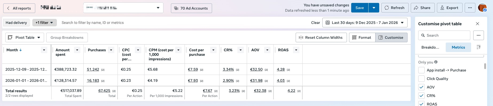
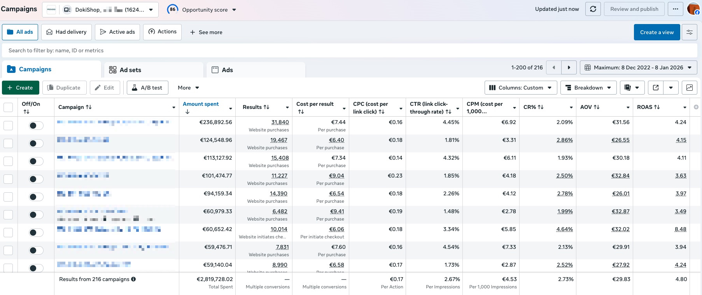
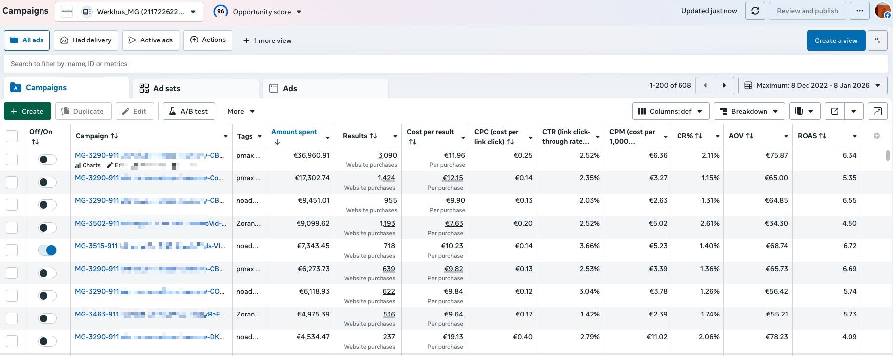
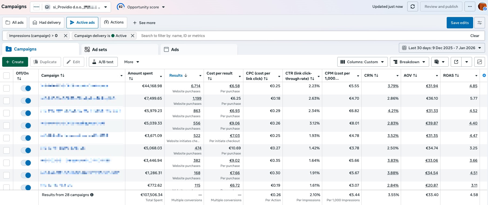
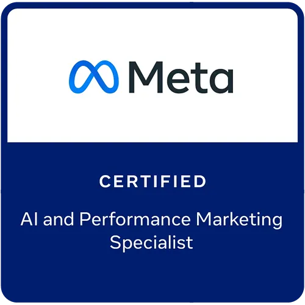
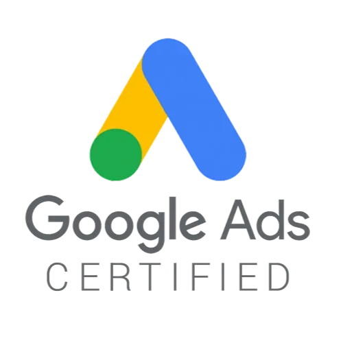

Redizajn e-commerce product stranice
Kompletan redizajn product stranice po psihologiji kupovine — nova social-proof sekcija i jasan CTA.
Performance marketing za e-commerce brendove
Pomažemo e-commerce brendovima da profitabilno skaliraju prodaju kroz performance marketing, kontinuiranu produkciju kreativa i CRO. Iza nas je više od €50M oglasnog budžeta kojim smo upravljali za 20+ brendova širom Evrope.
Brendovi s kojima smo radili
01Usluge
Ne optimizujemo samo kampanje. Povezujemo oglašavanje, produkciju kreativa i optimizaciju shopa kako bi više klikova postalo profitabilna kupovina.
Meta Ads su u fokusu našeg rada, dok Google i TikTok uključujemo tamo gdje mogu donijeti dodatni profitabilan rast. Planiramo budžete, postavljamo jasnu strukturu kampanja i optimizujemo prema prodaji i profitu, a ne prema metrikama koje dobro izgledaju samo u izvještajima.
Razvijamo kreativne koncepte i produciramo UGC videe, product demo oglase, statične vizuale i druge formate. Svaku kreativu razvijamo kao strukturisan test, sa jasnom hipotezom, ciljem i mjerljivim rezultatom.
Analiziramo put od klika do kupovine. Unapređujemo i testiramo ponudu, stranice proizvoda, elemente povjerenja, CTA elemente i druga mjesta na kojima korisnici najčešće odustaju od kupovine.
AI i automatizaciju uvodimo tamo gdje može ubrzati analizu, pojednostaviti rutinske procese i pomoći nam da brže prepoznamo prilike i donosimo kvalitetnije odluke. Razvijamo dashboarde i alate za izvještavanje, praćenje zaliha i predikciju buduće potražnje, kako bi tvoj tim imao više vremena za posao koji direktno doprinosi rastu. Fokus je na konkretnom poslovnom učinku, a ne na praćenju trendova.
Radimo na ponudi, cijenama, prosječnoj vrijednosti narudžbe, LTV-u, zadržavanju kupaca te planiranju zaliha i nabavke na osnovu prodajnih podataka. Dobijaš partnera koji razumije cijelu ekonomiku shopa i gleda širu sliku, ne samo rezultate unutar Ads Managera.
02Kreative
Kreiramo video i statične oglase koji privlače pažnju, jasno predstavljaju ponudu i daju algoritmu više kvalitetnih prilika za pronalazak kupaca.
Izbor nedavno kreiranih oglasa — kompletan portfolio dostupan je na upit.
03Rezultati
Stvarni, neizmijenjeni izvještaji iz Meta Ads Managera. Osjetljivi podaci sakriveni su radi povjerljivosti.
Rezultati su prikazani iz stvarnih klijentskih računa. Neka od imena klijenata i kampanja sakrivena su radi povjerljivosti.




04Landing stranice
Dizajniramo i optimizujemo landing stranice sa jednim jedinim ciljem — maksimalan conversion rate.
Kompletan redizajn product stranice po psihologiji kupovine — nova social-proof sekcija i jasan CTA.
Advertorial stranica koja educira kupca prije kupovine i značajno povećava prosječnu vrijednost narudžbe.
05Zašto AdsMerce
Kampanja ne može popraviti slabu ponudu, loš oglas ili stranicu na kojoj kupac odustane. Zato gledamo cijeli put do kupovine i rješavamo problem tamo gdje stvarno nastaje.
Ne gledamo samo koliko je prodano. Pratimo koliko košta nova kupovina, koliko vrijedi narudžba i šta ostaje nakon troška oglasa. Budžet povećavamo tek kada računica ima smisla.
Dobijaš senior, hands-on pristup zasnovan na više od osam godina rada sa e-commerce računima širom Evrope. Strategiju i ključne odluke ne prebacujemo na juniore nakon potpisivanja saradnje.
Kampanje vodimo iz računa koje ti posjeduješ. Podaci, oglasi i svi materijali koje napravimo ostaju tvoji, bez obzira na trajanje saradnje.
Dobijaš jasan pregled rezultata, završenih testova i sljedećih prioriteta. Bez skrivanja iza komplikovanih izvještaja i nejasnih objašnjenja.


Osnivač
AdsMerce vodi Zoran Pejić, performance marketer sa više od osam godina hands-on iskustva u skaliranju e-commerce brendova na evropskim tržištima.
Strategiju i ključne odluke ne prebacujemo na juniore. Po potrebi uključujemo provjerene kreatore, dizajnere i tehničke saradnike, dok performance i smjer projekta ostaju direktno vođeni.
06Kako radimo
Najvažnije korekcije i testovi kreću odmah. Tokom prva tri mjeseca postavljamo sistem, provjeravamo šta stvarno radi i stvaramo uslove za kontrolisano povećavanje budžeta.
Analiziramo kampanje, tracking, kreative, ponudu, ekonomiku proizvoda i ključne stranice shopa. Definišemo najveće prilike i redoslijed kojim ih rješavamo.
Uređujemo mjerenje, strukturu kampanja i izvještavanje. Paralelno pokrećemo prve optimizacije i pripremamo plan novih oglasa.
Testiramo komunikacijske uglove, formate, ponude i ključne elemente stranica. Budžet usmjeravamo prema testovima koji pokazuju stvaran potencijal.
Kada rezultati postanu dovoljno stabilni, postepeno povećavamo budžet. Paralelno nastavljamo s novim testovima kako rast ne bi zavisio od jednog oglasa ili kampanje.
Korekcije kreću odmah. Skaliranje dolazi kada podaci potvrde da računica ima smisla.
07FAQ
Početni angažman ugovaramo na tri mjeseca. Najvažnije korekcije i prvi testovi kreću odmah, dok nam 90 dana daje dovoljno vremena da provjerimo šta radi i skaliramo rezultat na osnovu podataka. Nakon toga analiziramo učinak i dogovaramo nastavak saradnje. Nakon početnog perioda saradnja se nastavlja iz mjeseca u mjesec.
Ne postoji iznos koji odgovara svakom shopu. Potreban budžet zavisi od tržišta, cijene proizvoda, marže, ciljeva i obima testiranja. Zato u prijavi pitamo koliko trenutno ulažeš ili planiraš ulagati. Na osnovu toga procjenjujemo kakav je plan realan i možemo li ti u ovoj fazi zaista pomoći. Ako saradnja još nema smisla, reći ćemo ti to otvoreno i predložiti šta prvo treba riješiti.
Prve optimizacije i testovi najčešće pokrećemo tokom prve sedmice. Rani signali obično se pojavljuju kroz prve dvije do četiri sedmice, dok su za pouzdanije zaključke i stabilnije skaliranje najčešće potrebna jedan do dva mjeseca. Tempo zavisi od budžeta, količine postojećih podataka, ponude i početnog stanja računa.
Tvoji. Kampanje vodimo u računima koje ti posjeduješ, a svi oglasi i materijali koje napravimo ostaju tvoji i nakon završetka saradnje.
Saradnja počinje prijavom za besplatan audit. Pregledamo ad account i shop, ciljeve, trenutne rezultate i budžet kako bismo procijenili gdje postoji najveći potencijal i da li smo dobar fit. Ako vjerujemo da možemo donijeti konkretnu vrijednost, javljamo ti se sa prijedlogom narednih koraka.
Ne. Fokusirani smo isključivo na e-commerce. Ta specijalizacija nam omogućava da brže prepoznamo probleme, donosimo kvalitetnije odluke i primjenjujemo iskustvo iz sličnih situacija i tržišta.
To su oglasni računi dostupni preko zvaničnog Metinog regionalnog partnera. Kada imaju smisla za konkretan brend, mogu omogućiti dodatni kanal podrške i lakšu komunikaciju u slučaju tehničkih problema ili restrikcija.
08Kontakt
Prijavi se za besplatan audit ako razmatraš dugoročnu saradnju ili rezerviši 1-na-1 konsultacije ako želiš riješiti konkretan e-commerce problem.
Personalizovani audit sa najvažnijim nalazima i konkretnim koracima za rješenje najvećeg problema.
Namijenjeno e-commerce brendovima kod kojih vidimo realan potencijal za saradnju.
Direktne 1-na-1 konsultacije za analizu i rješavanje konkretnog e-commerce problema. Dolaziš s pitanjima, odlaziš s jasnim narednim koracima.